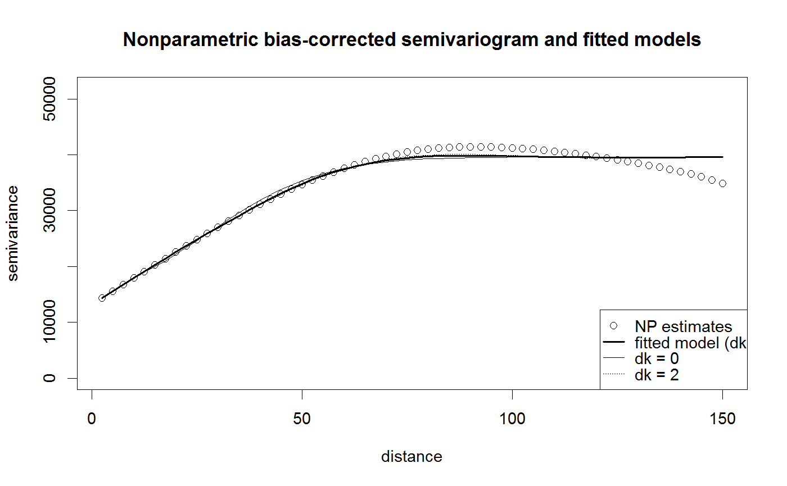

Fits a `nonparametric' isotropic Shapiro-Botha variogram model by WLS through
quadratic programming.
Following Gorsich and Genton (2004), the nodes are selected as the scaled
roots of Bessel functions (see disc.sb).
fitsvar.sb.iso(esv, dk = 4 * ncol(esv$data$x), nx = NULL, rmax = esv$grid$max, min.contrib = 10, method = c("cressie", "equal", "npairs", "linear"), iter = 10, tol = sqrt(.Machine$double.eps))
| esv | pilot semivariogram estimate, a |
|---|---|
| dk | dimension of the kappa function ( |
| nx | number of discretization nodes. Defaults to |
| rmax | maximum lag considered in the discretization (range of the fitted variogram on output). |
| min.contrib | minimum number of (equivalent) contributing pairs (pilot estimates with a lower number are ignored, with a warning). |
| method | string indicating the WLS fitting method to be used
(e.g. |
| iter | maximum number of interations of the WLS algorithm (used only
if |
| tol | absolute convergence tolerance (used only
if |
Returns the fitted variogram model, an object of class fitsvar.
A svarmod object
with additional components esv (pilot semivariogram estimate) and fit containing:
vector of lags/distances.
vector of pilot semivariogram estimates.
vector of fitted semivariances.
vector of (least squares) weights.
value of the objective function.
string indicating the WLS fitting method used.
number of WLS iterations (if method == "cressie").
The fit is done using a (possibly iterated) weighted least squares criterion, minimizing:
$$WLS(\theta) = \sum_i w_i[(\hat{\gamma}(h_i)) - \gamma(\theta; h_i)]^2.$$
The different options for the argument method define the WLS algorithm used:
"cressie"The default method. The procedure is iterative, with \(w_i = 1\) (OLS) used for the first step and with the weights recalculated at each iteration, following Cressie (1985), until convergence: $$w_i = N(h_i)/\gamma(\hat{\theta}; h_i)^2,$$ where \(N(h_i)\) is the (equivalent) number of contributing pairs in the estimation at lag \(h_i\).
"equal"Ordinary least squares: \(w_i = 1\).
"npairs"\(w_i = N(h_i).\)
"linear"\(w_i = N(h_i)/h_i^2\) (default fitting method in gstat package).
Function solve.QP of quadprog package is used
to solve a strictly convex quadratic program. To avoid problems, the Choleski decomposition
of the matrix corresponding to the original problem is computed using chol with pivot = TRUE.
If this matrix is only positive semi-definite (non-strictly convex QP),
the number of discretization nodes will be less than nx.
Ball, J.S. (2000) Automatic computation of zeros of Bessel functions and other special functions. SIAM Journal on Scientific Computing, 21, 1458-1464.
Cressie, N. (1985) Fitting variogram models by weighted least squares. Mathematical Geology, 17, 563-586.
Cressie, N. (1993) Statistics for Spatial Data. New York. Wiley.
Fernandez Casal R., Gonzalez Manteiga W. and Febrero Bande M. (2003) Flexible Spatio-Temporal Stationary Variogram Models, Statistics and Computing, 13, 127-136.
Gorsich, D.J. and Genton, M.G. (2004) On the discretization of nonparametric covariogram estimators. Statistics and Computing, 14, 99-108.
Shapiro, A. and Botha, J.D. (1991) Variogram fitting with a general class of conditionally non-negative definite functions. Computational Statistics and Data Analysis, 11, 87-96.
svarmod.sb.iso, disc.sb, plot.fitsvar.
# Trend estimation lp <- locpol(aquifer[,1:2], aquifer$head, nbin = c(41,41), h = diag(100, 2), hat.bin = TRUE) # 'np.svariso.corr()' requires a 'lp$locpol$hat' component # Variogram estimation esvar <- np.svariso.corr(lp, maxlag = 150, nlags = 60, h = 60, plot = FALSE) # Variogram fitting svm2 <- fitsvar.sb.iso(esvar) # dk = 2 svm3 <- fitsvar.sb.iso(esvar, dk = 0) # To avoid negative covariances... svm4 <- fitsvar.sb.iso(esvar, dk = 10) # To improve fit... plot(svm4, main = "Nonparametric bias-corrected semivariogram and fitted models", legend = FALSE)plot(svm3, add = TRUE)plot(svm2, add = TRUE, lty = 3)legend("bottomright", legend = c("NP estimates", "fitted model (dk = 10)", "dk = 0", "dk = 2"), lty = c(NA, 1, 1, 3), pch = c(1, NA, NA, NA), lwd = c(1, 2, 1, 1))